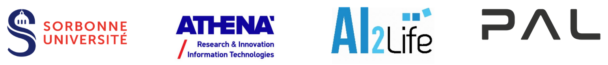
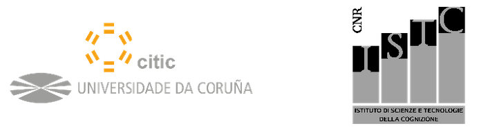

Présentation du projet
Comme dit dans les précédents rendus, le “Robothon” est une compétition robotique organisée par la TU Munich depuis 3 ans dont l’objectif principal est de réaliser différentes opérations de manipulations complexes sur un boîtier spécifique, en sachant que la boîte que l’on a à disposition date de l’édition de 2023. Il réunit différentes tâches (qui regroupent de manière générale l’ensemble des opérations qu’un bras de robot collaboratif devrait réaliser en tenant compte de sa vitesse d’exécution et des différentes contraintes liées aux tâches). Afin de constamment améliorer le nombre de tâches effectuées, la vitesse d’exécution, la robustesse et la créativité de la solution présentée, les codes des différentes équipes participantes ont été mis à disposition en open source au lien suivant Robothon.
Quant aux modules et codes développés lors de ce projet, ils seront réutilisés pour des projets européens de plus grande envergure tel que euROBIN qui rassemble 31 instituts de recherches, universités, et partenaires industriels de premier plan, unissant leur force pour mettre en commun leur compétences en Europe dont l’objectif est de former un réseau d’excellence dans le domaine de la robotique en Europe (robot commandés ou encore faisant appel à de l’IA pour optimiser au fur et à mesure la planification de trajectoire).
Fig. 1 Logos des projets européens euROBIN et PILLAR
On peut aussi parler de PILLAR dont l’objectif est de développer une nouvelle génération de robots dotés d’un niveau d’autonomie plus élevé, capables de déterminer leurs propres objectifs, et d’établir leurs propres stratégies, en s’appuyant de manière créative sur les expériences acquises au cours de leur vie pour répondre aux désirs de leurs concepteurs/utilisateurs humains dans des cas d’utilisation d’applications réelles.
|

|

|
|---|
Fig. 2 Un aperçu des partenaires collaborant pour le projet européen PILLAR